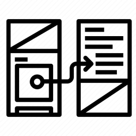

<!DOCTYPE html>
<html>
    <link rel="stylesheet" href="css/style.css" />
    <title>Ulzii's Portfolio</title>
    <script src="https://ajax.googleapis.com/ajax/libs/jquery/3.5.1/jquery.min.js"></script>
    <script src="js/index.js"></script>
</html>
  <body>
    <header class="navigation">
      <div class="inline-block logo">
        <a href="#">
            
        </a>
      </div>
      <nav class="inline-block">
        <ul>
          <li class="inline-block"></li>
          <a href="#" id="About">About</a>
          <li class="inline-block"></li>
          <a href="#" id="Skills">Skills</a>
          <li class="inline-block"></li>
          <a href="#" id="Work">Work</a>
          <li class="inline-block"></li>
          <a href="#" id="Contact">Contact</a>

        </ul>
      </nav>
    </header>
    <section class="heroImg">
      <div class="content">
        
        <p>
          Hi there, I'm Ulzii, a freelance UX/UI designer currently based in
          Seattle, Washington. As a User Experience Designer, I'm driven by a
          curiosity about how everyday products shape human behavior. My passion
          lies in crafting intuitive, meaningful experiences that foster
          connections and unite communities. Let's connect and collaborate on
          your next project!
        </p>
        
        <button>Download Resume</button>
        <a href="#" id=".button"></a>
        
      </div>
    </section>
    <footer>
      <ul>
        <li class="inline-block"></li>
        <a href="#" id="About">About</a>
        <li class="inline-block"></li>
        <a href="#" id="Skills">Skills</a>
        <li class="inline-block"></li>
        <a href="#" id="Work">Work</a>
        <li class="inline-block"></li>
        <a href="#" id="Contact">Contact</a>
      </ul>
    </footer>
  </body>
</html>

<!-- My UX Skills section coded using CSS flex -->
<section class="mySkills">
  <h1>My UX Skills</h1>
  <div class="flexContainer">
    <div class="skillItem">
      
      <h3>User Interface Design</h3>
      <p>
        Create visually appealing and intuitive interfaces that enhance the
        overall user experience, ensuring that elements such as layout,
        navigation, and visual hierarchy are optimized to facilitate user
        interaction and achieve the goals of the product or service.
      </p>
    </div>
    <div class="skillItem">
      
      <h3>User Research</h3>
      <p>
        Understanding the needs and behaviors of users through methods like
        interviews and surveys, analyzing data to uncover insights, and using
        these insights to design intuitive and user-friendly experiences for
        products or services.
      </p>
    </div>
    <div class="skillItem">
      
      <h3>Prototyping</h3>
      <p>
        Making interactive models of designs, letting stakeholders see and test
        ideas before finalizing them, which helps ensure the end product meets
        user needs and minimizes risks.
      </p>
    </div>
  </div>
</section>

<section class="myWork">
  <h1>My Work</h1>
  <div class="workGrid">
    <div>
      
    </div>
    <div>
      <h4>Sensitummy App Development</h4>
      <h5>UX Research | Usability Testing | UI Design | Storytelling</h5>
      <p>
        App design for people struggling with stomach issues, the app helps them
        journal, log their moods and see what foods are healthy for them.
        Conducted in-depth research, UX design, testing, prototyping. In future
        iterations it will have high-fidelity interfaces and will be
        functionable.
      </p>
      <button>View Project</button>
    </div>
    <div>
      
    </div>
    <div>
      <h4>EmpowHERto Nonprofit Web Redesign</h4>
      <h5>UX Research | Usability Testing | UI Design</h5>
      <p>
        Revised user pathways for applicants through in-depth research,
        addressing stakeholder requirements and overcoming obstacles.
      </p>
      <button>View Project</button>
    </div>
  </div>
  <h3>View all projects</h3>
</section>
</body>
</html>

